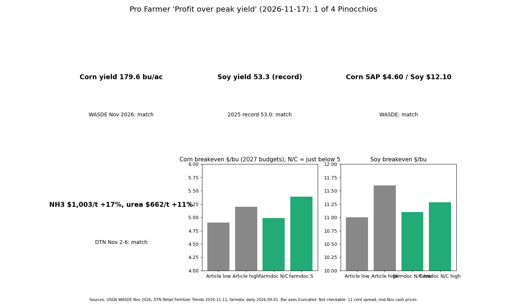

Mostly accurate: the figures check out, but the breakeven ranges are wider than the source (1 Pinocchio)

Summary of findings
The Pro Farmer piece (Hillari Mason, 2026-11-17) rates 1 of 4 Pinocchios. Its USDA and DTN figures match primary sources exactly. Its farmdoc breakeven ranges are looser than the published figures.
- WASDE Nov 2026: corn yield 179.6 bu/ac, soybean yield 53.3, corn season-average price $4.60, soybean $12.10. All verified. 53.3 beats the prior record of 53.0 (2025 final), so "record" holds as a forecast.
- DTN, Nov 2-6 survey: anhydrous $1,003/t (+17% y/y), urea $662/t (+11%). Verified. The survey is the first week of November, and DTN's second-week report shows prices mixed.
- Breakevens: the article says corn is $4.90-5.20 and soybeans $11-11.60. farmdoc's 2027 budgets say northern/central corn is "just below $5", southern Illinois corn is $5.39, and northern/central soybeans are $11.10-11.28. The article's range is roughly consistent but imprecise, and it omits that these are 2027 budgets, not 2026 crop costs.
- Strip-till saves 1-2 gal/ac: an older farmdoc study gives about 1.3 gal/ac. Plausible, though the figure is dated.
- Not checkable here: the 11-cent Dec-Mar corn spread and the mid-November cash prices. I did not retrieve futures settlements.
- Possible misleading framing: "corn at or below breakeven" rests on budget prices of $5 corn, where farmdoc projects small positive returns ($28-36/ac, southern Illinois -$61/ac). The sustainability-as-byproduct claim is opinion.
The rating would change if the 11-cent spread or the cash-price claims prove wrong.
Sources
- https://esmis.nal.usda.gov/sites/default/release-files/796142/wasde1126.txt
- https://www.dtnpf.com/agriculture/web/ag/crops/article/2026/11/11/retail-fertilizer-prices-mixed-first
- https://farmdocdaily.illinois.edu/2026/09/illinois-crop-budgets-for-2027.html
- https://www.dtnpf.com/agriculture/web/ag/news/article/2025/11/20/first-record-us-soybean-yield-since
- https://farmdoc.illinois.edu/assets/management/fefo/fefo_06_07.pdf
Confidence: high on the USDA and DTN figures. Medium on the breakevens, which come from a WebFetch summary of the farmdoc page, not the handbook tables.